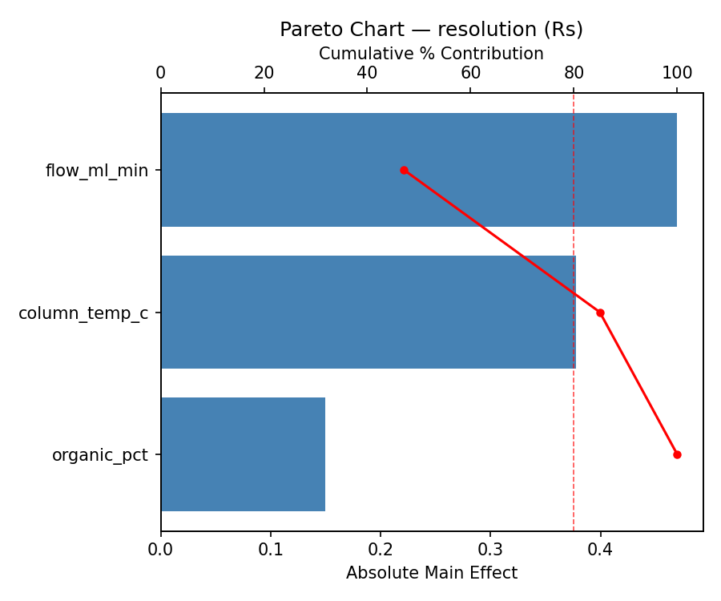
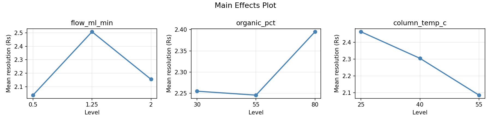
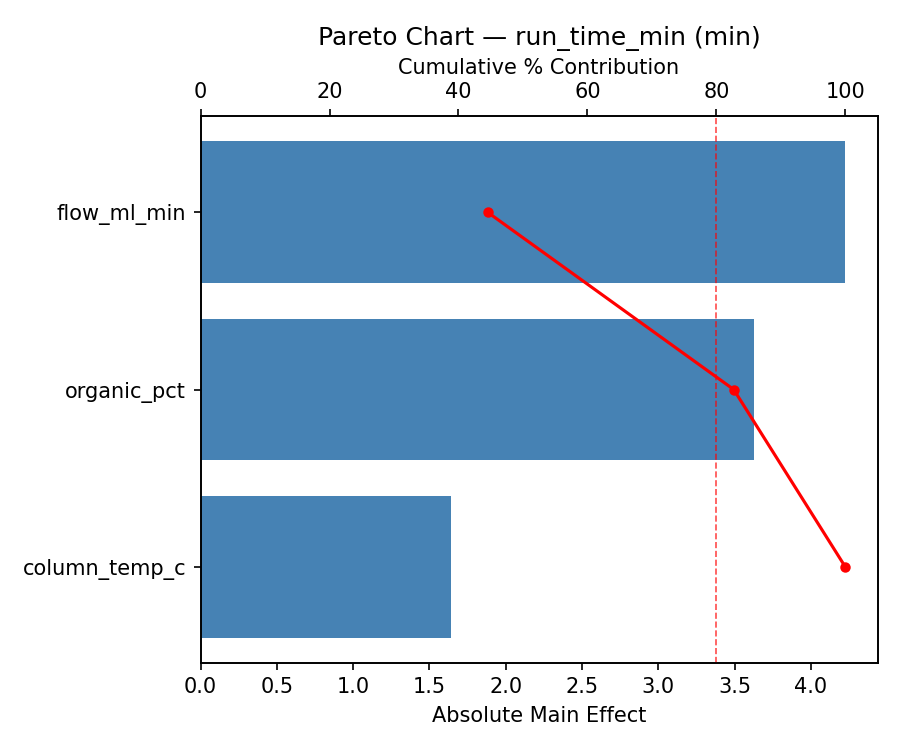
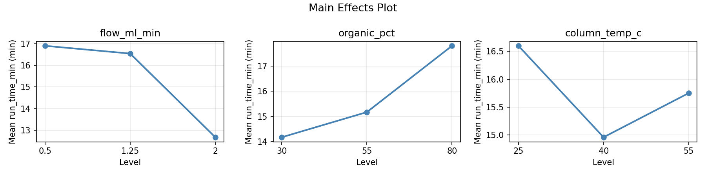
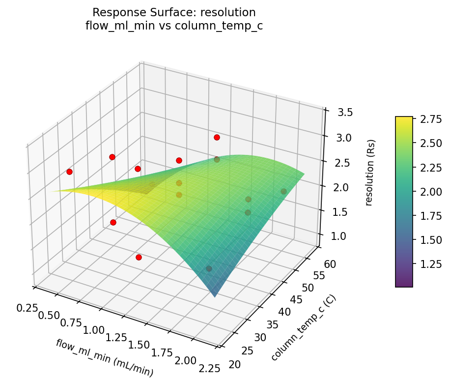
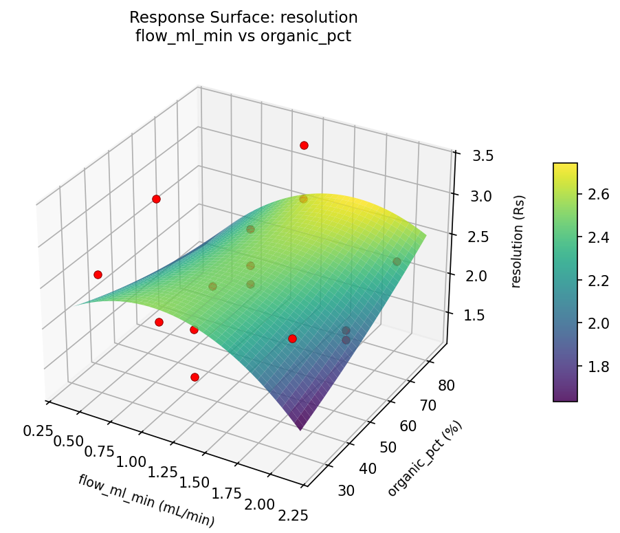
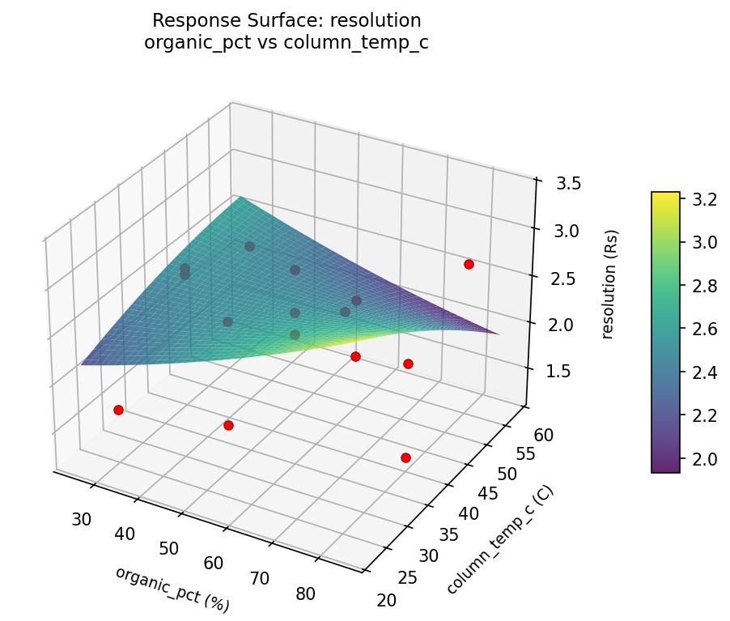
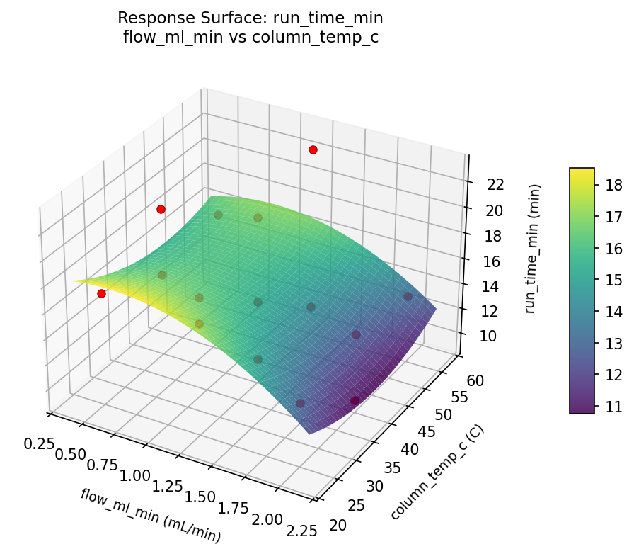
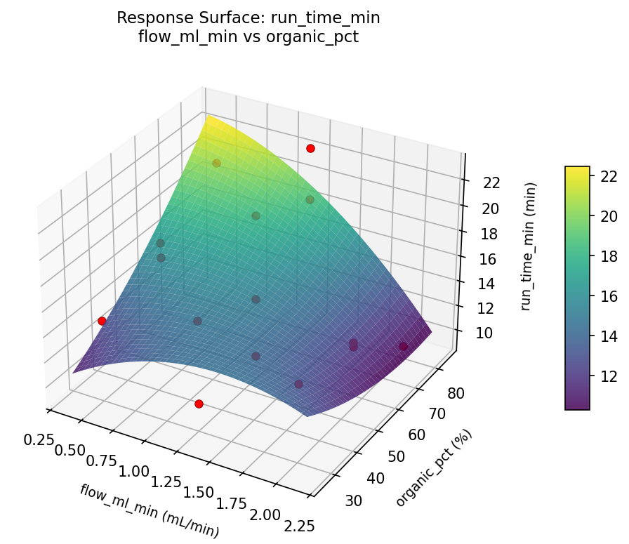
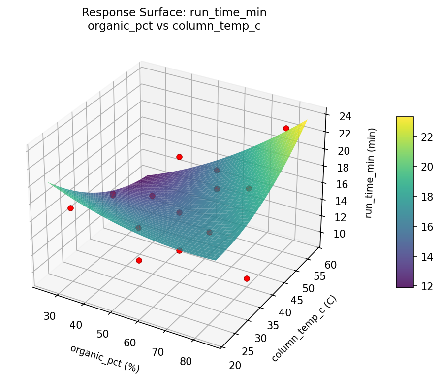

Summary
This experiment investigates chromatography separation. Box-Behnken design to maximize resolution and minimize run time by tuning flow rate, mobile phase ratio, and column temperature.
The design varies 3 factors: flow ml min (mL/min), ranging from 0.5 to 2.0, organic pct (%), ranging from 30 to 80, and column temp c (C), ranging from 25 to 55. The goal is to optimize 2 responses: resolution (Rs) (maximize) and run time min (min) (minimize). Fixed conditions held constant across all runs include column = C18_150mm, detector = UV_254nm.
A Box-Behnken design was chosen because it efficiently fits quadratic models with 3 continuous factors while avoiding extreme corner combinations — requiring only 15 runs instead of the 8 needed for a full factorial at two levels.
Quadratic response surface models were fitted to capture potential curvature and factor interactions. The RSM contour plots below visualize how pairs of factors jointly affect each response.
Key Findings
For resolution, the most influential factors were flow ml min (47.1%), column temp c (37.9%), organic pct (15.0%). The best observed value was 3.37 (at flow ml min = 2, organic pct = 55, column temp c = 55).
For run time min, the most influential factors were flow ml min (44.5%), organic pct (38.2%), column temp c (17.3%). The best observed value was 9.3 (at flow ml min = 2, organic pct = 80, column temp c = 40).
Recommended Next Steps
- Run confirmation experiments at the predicted optimal settings to validate the model.
- Consider whether any fixed factors should be varied in a future study.
Experimental Setup
Factors
| Factor | Low | High | Unit |
|---|
flow_ml_min | 0.5 | 2.0 | mL/min |
organic_pct | 30 | 80 | % |
column_temp_c | 25 | 55 | C |
Fixed: column = C18_150mm, detector = UV_254nm
Responses
| Response | Direction | Unit |
|---|
resolution | ↑ maximize | Rs |
run_time_min | ↓ minimize | min |
Configuration
{
"metadata": {
"name": "Chromatography Separation",
"description": "Box-Behnken design to maximize resolution and minimize run time by tuning flow rate, mobile phase ratio, and column temperature"
},
"factors": [
{
"name": "flow_ml_min",
"levels": [
"0.5",
"2.0"
],
"type": "continuous",
"unit": "mL/min"
},
{
"name": "organic_pct",
"levels": [
"30",
"80"
],
"type": "continuous",
"unit": "%"
},
{
"name": "column_temp_c",
"levels": [
"25",
"55"
],
"type": "continuous",
"unit": "C"
}
],
"fixed_factors": {
"column": "C18_150mm",
"detector": "UV_254nm"
},
"responses": [
{
"name": "resolution",
"optimize": "maximize",
"unit": "Rs"
},
{
"name": "run_time_min",
"optimize": "minimize",
"unit": "min"
}
],
"settings": {
"operation": "box_behnken",
"test_script": "use_cases/189_chromatography_separation/sim.sh"
}
}
Experimental Matrix
The Box-Behnken Design produces 15 runs. Each row is one experiment with specific factor settings.
| Run | flow_ml_min | organic_pct | column_temp_c |
|---|
| 1 | 1.25 | 30 | 25 |
| 2 | 1.25 | 55 | 40 |
| 3 | 2 | 55 | 55 |
| 4 | 2 | 55 | 25 |
| 5 | 1.25 | 55 | 40 |
| 6 | 1.25 | 55 | 40 |
| 7 | 0.5 | 55 | 55 |
| 8 | 2 | 30 | 40 |
| 9 | 1.25 | 30 | 55 |
| 10 | 2 | 80 | 40 |
| 11 | 0.5 | 55 | 25 |
| 12 | 1.25 | 80 | 55 |
| 13 | 0.5 | 30 | 40 |
| 14 | 0.5 | 80 | 40 |
| 15 | 1.25 | 80 | 25 |
Step-by-Step Workflow
1
Preview the design
$ python doe.py info --config use_cases/189_chromatography_separation/config.json
2
Generate the runner script
$ python doe.py generate --config use_cases/189_chromatography_separation/config.json \
--output use_cases/189_chromatography_separation/results/run.sh --seed 42
3
Execute the experiments
$ bash use_cases/189_chromatography_separation/results/run.sh
4
Analyze results
$ python doe.py analyze --config use_cases/189_chromatography_separation/config.json
5
Get optimization recommendations
$ python doe.py optimize --config use_cases/189_chromatography_separation/config.json
6
Generate the HTML report
$ python doe.py report --config use_cases/189_chromatography_separation/config.json \
--output use_cases/189_chromatography_separation/results/report.html
Real-World Experiment Workflow
ℹ
Physical Laboratory Experiment? Use the Manual Workflow
Laboratory experiments involve real chemical reactions, biological processes, and analytical instruments. Results must be measured from actual samples. The simulation script above is for demonstration. For your real experiments, use record, status, and export-worksheet.
$ python doe.py export-worksheet --config use_cases/189_chromatography_separation/config.json \
--format csv --output worksheet.csv
$ python doe.py status --config use_cases/189_chromatography_separation/config.json
$ python doe.py record --config use_cases/189_chromatography_separation/config.json --run 1
$ python doe.py analyze --config use_cases/189_chromatography_separation/config.json --partial
$ python doe.py analyze --config use_cases/189_chromatography_separation/config.json
$ python doe.py optimize --config use_cases/189_chromatography_separation/config.json
$ python doe.py report --config use_cases/189_chromatography_separation/config.json \
--output report.html
✔
Works Without a Test Script
The analysis pipeline doesn't care how results were produced. Record your measurements with record, and the full analysis, optimization, and reporting pipeline works identically. Use --partial to get early insights before all runs are complete.
Features Exercised
| Feature | Value |
|---|
| Design type | box_behnken |
| Factor types | continuous (all 3) |
| Arg style | double-dash |
| Responses | 2 (resolution ↑, run_time_min ↓) |
| Total runs | 15 |
Analysis Results
Generated from actual experiment runs using the DOE Helper Tool.
Response: resolution
Top factors: flow_ml_min (47.1%), column_temp_c (37.9%), organic_pct (15.0%).
Pareto Chart

Main Effects Plot

Response: run_time_min
Top factors: flow_ml_min (44.5%), organic_pct (38.2%), column_temp_c (17.3%).
Pareto Chart

Main Effects Plot

Response Surface Plots
3D surfaces fitted with quadratic RSM. Red dots are observed data points.
resolution flow ml min vs column temp c

resolution flow ml min vs organic pct

resolution organic pct vs column temp c

run time min flow ml min vs column temp c

run time min flow ml min vs organic pct

run time min organic pct vs column temp c

Full Analysis Output
RSM surface: rsm_resolution_flow_ml_min_vs_organic_pct.png
RSM surface: rsm_resolution_flow_ml_min_vs_column_temp_c.png
RSM surface: rsm_resolution_organic_pct_vs_column_temp_c.png
RSM surface: rsm_run_time_min_flow_ml_min_vs_organic_pct.png
RSM surface: rsm_run_time_min_flow_ml_min_vs_column_temp_c.png
RSM surface: rsm_run_time_min_organic_pct_vs_column_temp_c.png
=== Main Effects: resolution ===
Factor Effect Std Error % Contribution
--------------------------------------------------------------
flow_ml_min 0.4696 0.1520 47.1%
column_temp_c 0.3775 0.1520 37.9%
organic_pct 0.1493 0.1520 15.0%
=== Summary Statistics: resolution ===
flow_ml_min:
Level N Mean Std Min Max
------------------------------------------------------------
0.5 4 2.0375 0.8488 1.2500 2.9400
1.25 7 2.5071 0.5457 1.6700 3.3700
2 4 2.1550 0.2849 1.8700 2.5100
organic_pct:
Level N Mean Std Min Max
------------------------------------------------------------
30 4 2.2550 0.4135 1.6700 2.5800
55 7 2.2457 0.5616 1.3800 2.9400
80 4 2.3950 0.8910 1.2500 3.3700
column_temp_c:
Level N Mean Std Min Max
------------------------------------------------------------
25 4 2.4625 0.8227 1.6700 3.3700
40 7 2.3043 0.5169 1.2500 2.8900
55 4 2.0850 0.5560 1.3800 2.7100
=== Main Effects: run_time_min ===
Factor Effect Std Error % Contribution
--------------------------------------------------------------
flow_ml_min 4.2250 1.0429 44.5%
organic_pct 3.6250 1.0429 38.2%
column_temp_c 1.6429 1.0429 17.3%
=== Summary Statistics: run_time_min ===
flow_ml_min:
Level N Mean Std Min Max
------------------------------------------------------------
0.5 4 16.9000 2.2271 14.7000 19.9000
1.25 7 16.5429 5.0059 10.2000 23.0000
2 4 12.6750 2.3071 9.3000 14.5000
organic_pct:
Level N Mean Std Min Max
------------------------------------------------------------
30 4 14.1750 2.6998 10.5000 17.0000
55 7 15.1714 3.4793 10.2000 21.3000
80 4 17.8000 5.9200 9.3000 23.0000
column_temp_c:
Level N Mean Std Min Max
------------------------------------------------------------
25 4 16.6000 2.3847 13.3000 19.0000
40 7 14.9571 4.4646 9.3000 21.3000
55 4 15.7500 5.3157 10.5000 23.0000
Pareto chart (resolution): use_cases/189_chromatography_separation/results/analysis/pareto_resolution.png
Pareto chart (run_time_min): use_cases/189_chromatography_separation/results/analysis/pareto_run_time_min.png
Main effects (resolution): use_cases/189_chromatography_separation/results/analysis/main_effects_resolution.png
Main effects (run_time_min): use_cases/189_chromatography_separation/results/analysis/main_effects_run_time_min.png
Optimization Recommendations
=== Optimization: resolution ===
Direction: maximize
Best observed run: #7
flow_ml_min = 2
organic_pct = 55
column_temp_c = 55
Value: 3.37
RSM Model (linear, R² = 0.1131, Adj R² = -0.1288):
Coefficients:
intercept +2.2880
flow_ml_min +0.1713
organic_pct -0.0637
column_temp_c +0.1875
RSM Model (quadratic, R² = 0.7834, Adj R² = 0.3936):
Coefficients:
intercept +2.6800
flow_ml_min +0.1712
organic_pct -0.0637
column_temp_c +0.1875
flow_ml_min*organic_pct +0.3850
flow_ml_min*column_temp_c +0.1175
organic_pct*column_temp_c +0.5375
flow_ml_min^2 -0.2775
organic_pct^2 -0.5575
column_temp_c^2 +0.1000
Curvature analysis:
organic_pct coef=-0.5575 concave (has a maximum)
flow_ml_min coef=-0.2775 concave (has a maximum)
column_temp_c coef=+0.1000 negligible curvature
Notable interactions:
organic_pct*column_temp_c coef=+0.5375 (synergistic)
flow_ml_min*organic_pct coef=+0.3850 (synergistic)
Predicted optimum (from quadratic model):
flow_ml_min = 2
organic_pct = 55
column_temp_c = 55
Predicted value: 2.9787
Model quality: Good fit — general trends are captured, some noise remains.
Factor importance:
1. organic_pct (effect: 0.6, contribution: 43.5%)
2. flow_ml_min (effect: 0.4, contribution: 29.7%)
3. column_temp_c (effect: 0.4, contribution: 26.8%)
=== Optimization: run_time_min ===
Direction: minimize
Best observed run: #10
flow_ml_min = 2
organic_pct = 80
column_temp_c = 40
Value: 9.3
RSM Model (linear, R² = 0.0882, Adj R² = -0.1605):
Coefficients:
intercept +15.6067
flow_ml_min +1.4625
organic_pct -0.4875
column_temp_c -0.3750
RSM Model (quadratic, R² = 0.7736, Adj R² = 0.3662):
Coefficients:
intercept +19.7000
flow_ml_min +1.4625
organic_pct -0.4875
column_temp_c -0.3750
flow_ml_min*organic_pct -4.3500
flow_ml_min*column_temp_c +1.8250
organic_pct*column_temp_c +0.5750
flow_ml_min^2 -3.3000
organic_pct^2 -2.3000
column_temp_c^2 -2.0750
Curvature analysis:
flow_ml_min coef=-3.3000 concave (has a maximum)
organic_pct coef=-2.3000 concave (has a maximum)
column_temp_c coef=-2.0750 concave (has a maximum)
Notable interactions:
flow_ml_min*organic_pct coef=-4.3500 (antagonistic)
flow_ml_min*column_temp_c coef=+1.8250 (synergistic)
organic_pct*column_temp_c coef=+0.5750 (synergistic)
Predicted optimum (from quadratic model):
flow_ml_min = 2
organic_pct = 30
column_temp_c = 40
Predicted value: 20.4000
Model quality: Good fit — general trends are captured, some noise remains.
Factor importance:
1. flow_ml_min (effect: 4.4, contribution: 50.0%)
2. organic_pct (effect: 2.4, contribution: 27.0%)
3. column_temp_c (effect: 2.1, contribution: 23.0%)